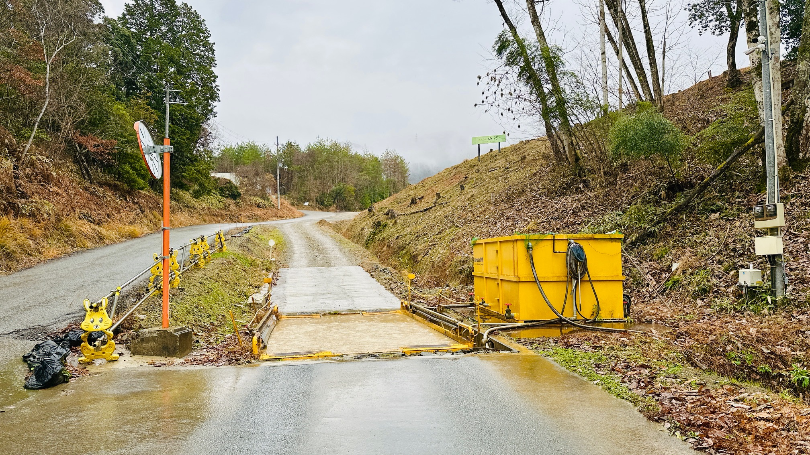
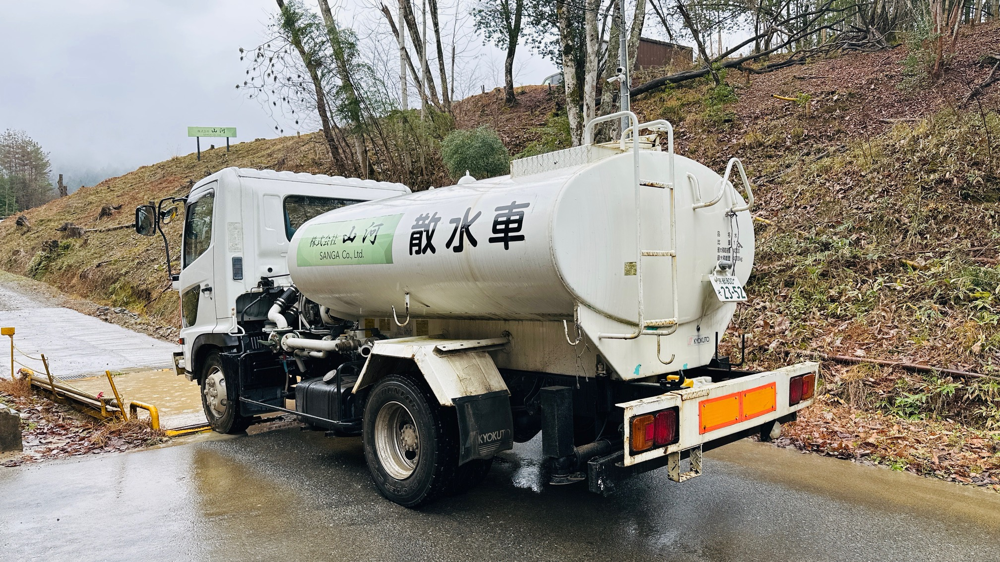
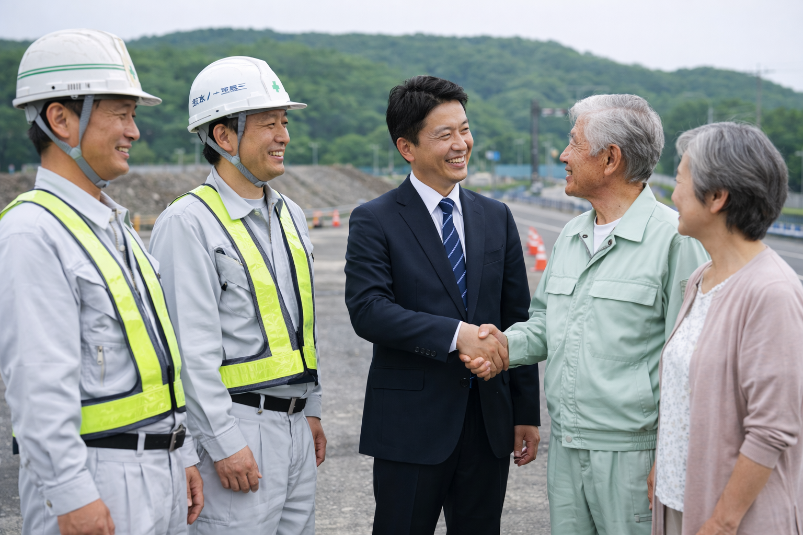

ENVIRONMENTAL COMMITMENT
環境保全への取り組み

環境と地域に配慮した残土処分場運営
当処分場では、建設現場等から発生する残土を適正に受け入れ、法令を遵守した安全な処分を行っております。
周辺環境および地域の皆様への影響を最小限に抑えるため、日々の管理体制を徹底しています。

タイヤ洗浄機による場外汚染の防止
場内にはタイヤ洗浄機を設置しており、搬出入車両のタイヤに付着した土砂や泥を確実に洗浄しています。
これにより、土砂の場外への持ち出しを防ぎ、周辺道路の美化と安全確保に努めています。

散水車による周辺道路の清掃・環境対策
当処分場では散水車を保有し、定期的に場内や近隣道路の清掃および散水を実施しています。
粉じんの飛散防止や道路の汚れ防止を行うことで、地域環境への負担軽減に取り組んでいます。

地域と共に歩む処分場を目指して
私たちは、単なる残土処分にとどまらず、
「地域に配慮した運営」「安全・清潔な環境づくり」を大切にしています。
今後も近隣の皆様や関係各所との信頼関係を大切にし、安心してご利用いただける処分場運営を続けてまいります。